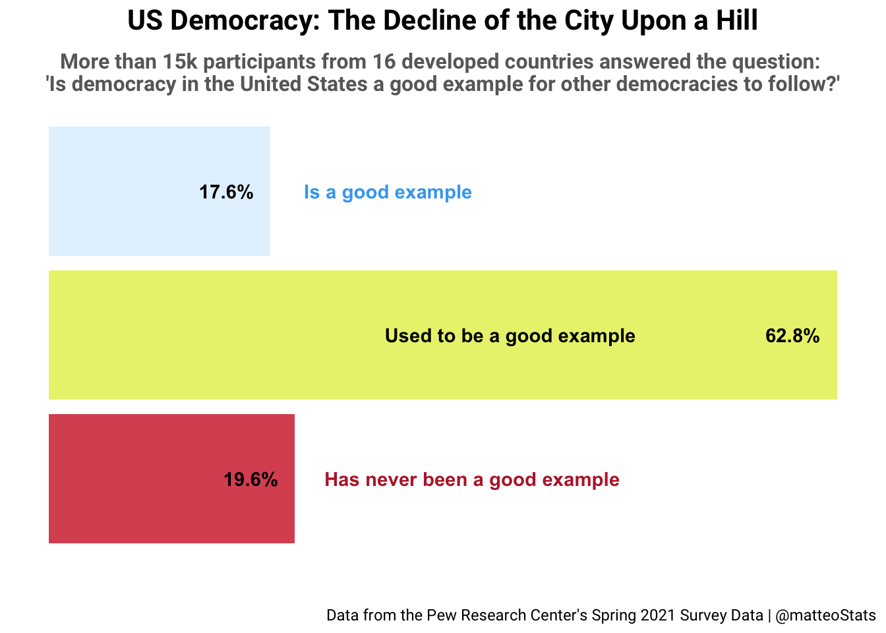
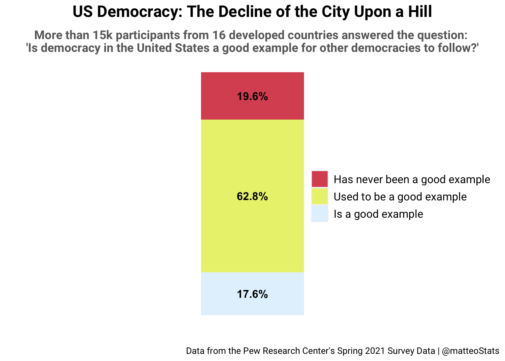
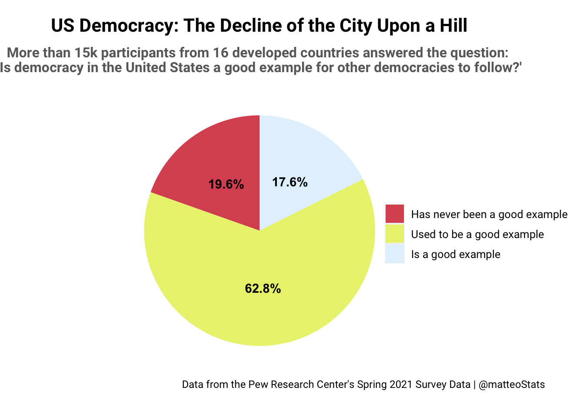
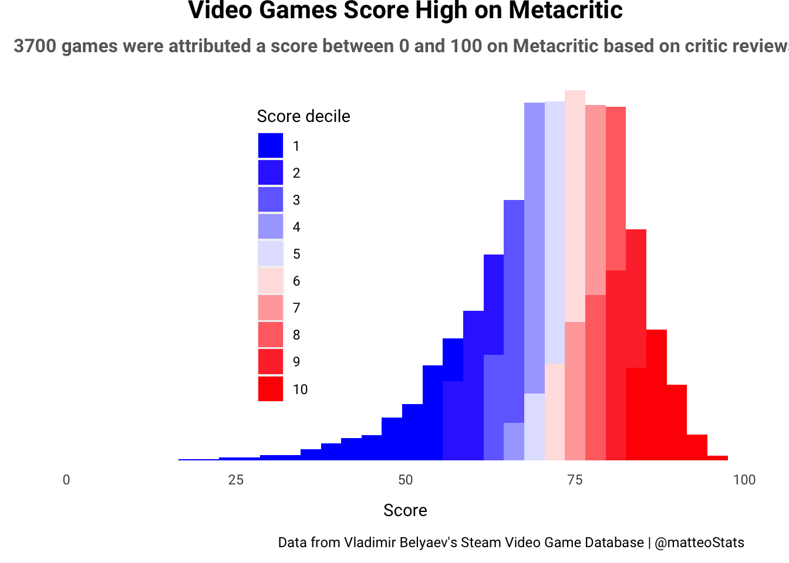
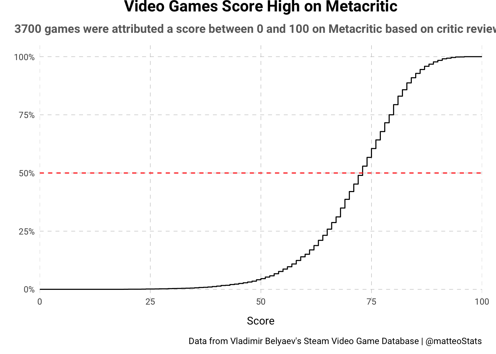
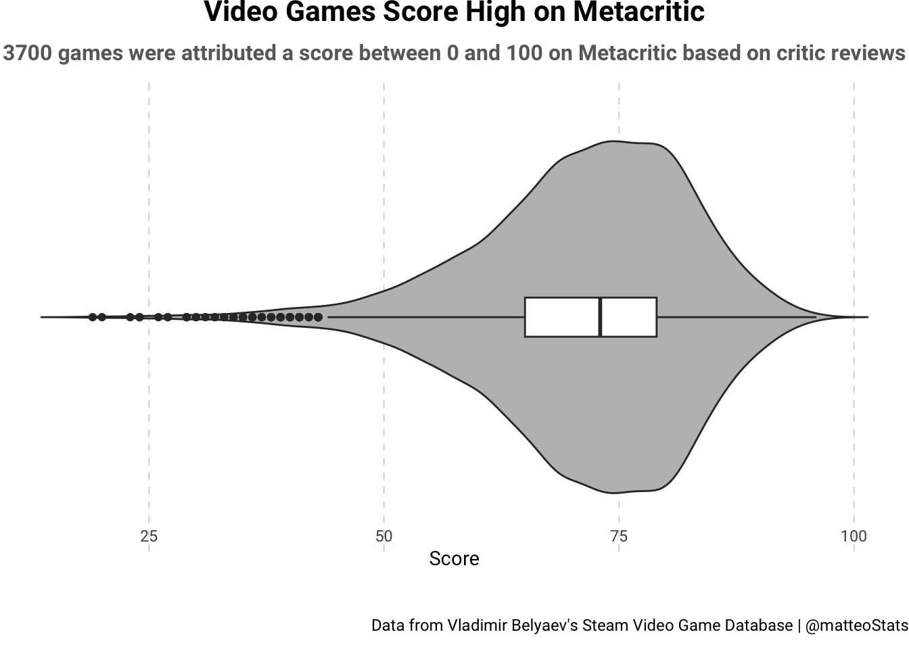
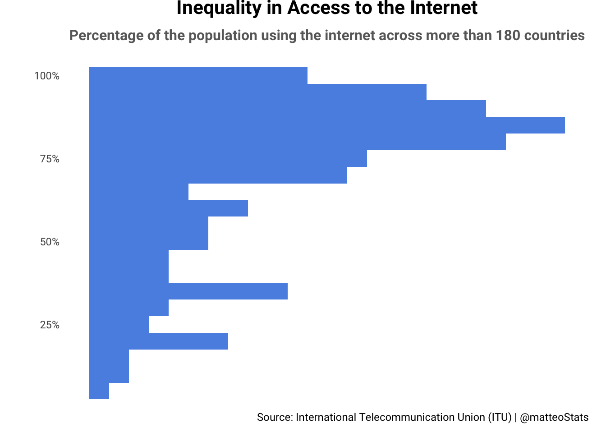
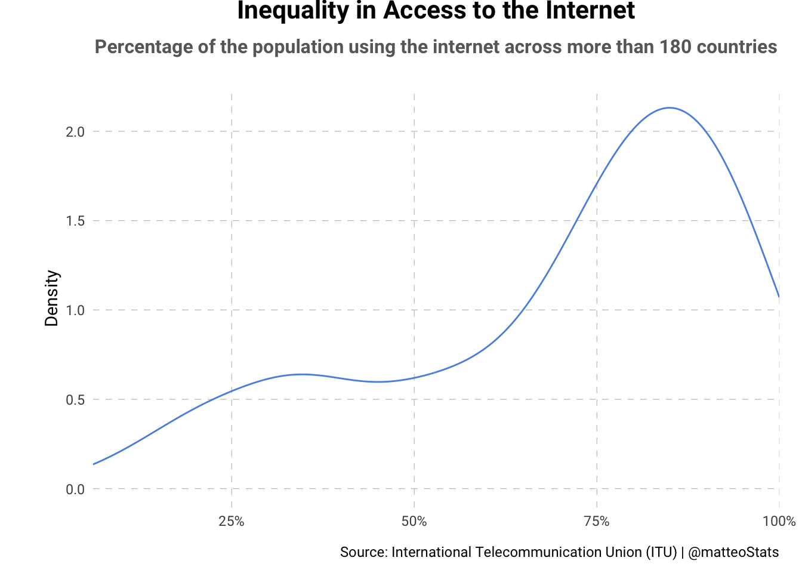
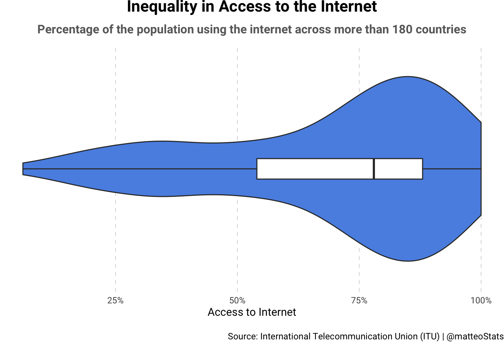
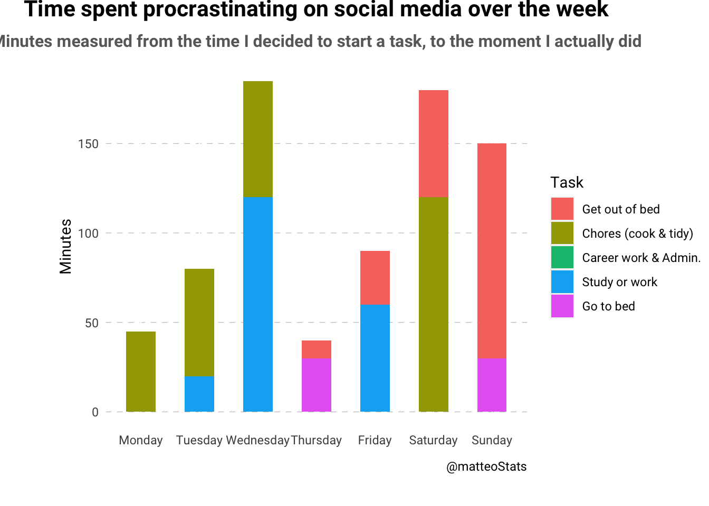

Code
library(haven)
library(tidyverse)
dataset <- read_sav("data/Pew_GlobalAttitudes_Spring2021.sav")
us_dem_example <- dataset %>%
select(ID, USDEMOCRACY_EXAMPLE) %>%
filter(USDEMOCRACY_EXAMPLE<7)The first variable is extracted from the Pew Research Center’s Global Attitudes & Trends Spring 2021 Questionnaire. People from a diversity of developed countries1 answered a questionnaire about their opinion on many topics including politics, the economy, and healthcare among others.
One question of the survey asks: “Which statement comes closest to your view, even if none are exactly right? Democracy in the United States…
- (1) IS a good example for other countries to follow
- (2) USED TO BE a good example, but has not been in recent years
- (3) HAS NEVER BEEN a good example for other countries to follow
The variable is a categorical variable. And even though it is constituted of numbers, they are used to represent categories, so mathematical operations should not be performed on them.
First, let us load the data and isolate our variable of interest. Participants who were either undecided or refused to answer are also removed.
library(haven)
library(tidyverse)
dataset <- read_sav("data/Pew_GlobalAttitudes_Spring2021.sav")
us_dem_example <- dataset %>%
select(ID, USDEMOCRACY_EXAMPLE) %>%
filter(USDEMOCRACY_EXAMPLE<7)Before anything else, a bit of transformation is necessary. We need to group each satisfaction level and count them. I also added a variable that displays the proportion of each level as a percentage. You will also note the “place” variable; it is used to place the labels in the chart.
us_dem_example_grouped <- us_dem_example %>%
mutate(USDEMOCRACY_EXAMPLE = as.character(USDEMOCRACY_EXAMPLE))%>%
group_by(USDEMOCRACY_EXAMPLE)%>%
summarise(value = n())%>%
mutate(perc = scales::percent(value / sum(value), accuracy = .1, trim = FALSE),
USDEMOCRACY_EXAMPLE_LONG = recode(USDEMOCRACY_EXAMPLE,
'1'='Is a good example',
'2'='Used to be a good example',
'3'='Has never been a good example'),
USDEMOCRACY_EXAMPLE_LONG = factor(USDEMOCRACY_EXAMPLE_LONG,
levels = c("Has never been a good example",
"Used to be a good example",
"Is a good example")),
place = case_when(USDEMOCRACY_EXAMPLE == '1' ~ -0.2,
USDEMOCRACY_EXAMPLE == '2' ~ 1.8,
USDEMOCRACY_EXAMPLE == '3' ~ -0.1))%>%
print()# A tibble: 3 × 5
USDEMOCRACY_EXAMPLE value perc USDEMOCRACY_EXAMPLE_LONG place
<chr> <int> <chr> <fct> <dbl>
1 1 2804 17.6% Is a good example -0.2
2 2 9974 62.8% Used to be a good example 1.8
3 3 3112 19.6% Has never been a good example -0.1Now on to the plotting. Please note that the plots use the Roboto font, if you are having trouble rendering this qmd document, the problem might come from the fact that you don’t have this font on your computer. If that happen, you can either download the font, or manually change it inside the code.
library(ggplot2)
library(ggthemes)
colours_fill <- c("#DB5461", "#EAF27C","#E3F2FD")
colours_text <- c("#B92736","#40A8F2")
plot1.1 <- ggplot(us_dem_example_grouped,
aes(y = USDEMOCRACY_EXAMPLE_LONG, x=value, fill = USDEMOCRACY_EXAMPLE_LONG))+
#bar chart
geom_bar(stat="identity")+
#LABELS
#percentages
geom_text(aes(label = perc), hjust = 1.3, fontface = "bold") +
#small bars: labels outside with the bar's colour
geom_text(data = us_dem_example_grouped[us_dem_example_grouped$USDEMOCRACY_EXAMPLE != '2',],
aes(label = USDEMOCRACY_EXAMPLE_LONG,
hjust = place,
col = USDEMOCRACY_EXAMPLE_LONG),
fontface ="bold")+
#long bar: label inside in black
geom_text(data = us_dem_example_grouped[us_dem_example_grouped$USDEMOCRACY_EXAMPLE == '2',],
aes(label = USDEMOCRACY_EXAMPLE_LONG,
hjust = place),
fontface = "bold")+
#other adjustments
theme(text=element_text(family="Roboto"),
panel.background = element_blank(),
plot.title=element_text(hjust=0.5, face="bold", size=16, margin = margin(b=10)),
plot.subtitle=element_text(hjust=0.5, face="bold", size=12, colour = "#696969"),
plot.caption=element_text(size=9, margin=margin(25,0,0,25)),
legend.position = "none",
axis.title.x = element_blank(),
axis.title.y = element_blank(),
axis.ticks = element_blank())+
scale_x_continuous(labels = NULL, breaks = NULL)+
scale_y_discrete(labels = NULL, breaks = NULL)+
scale_fill_manual(values = colours_fill)+
scale_colour_manual(values= colours_text)+
labs(title = "US Democracy: The Decline of the City Upon a Hill",
subtitle = "More than 15k participants from 16 developed countries answered the question: \n'Is democracy in the United States a good example for other democracies to follow?'",
caption="Data from the Pew Research Center's Spring 2021 Survey Data | @matteoStats")
plot1.1
Proportions of a categorical variable can be visualized in a variety of ways, and the bar chart is a very common tool to do so. Dot plots and lollipop charts are also good alternatives, but I wanted to focus on a more simple type of graph first.
The labels are quite long, so I oriented the barplot horizontally to have more liberty with their positioning. I voluntarily kept the default bars width and spacing. However, I reordered the levels so they would follow a logic, going from the most positive opinion, to the most negative.
In order to make the graph as simple and readable as possible, I removed the axes and included all the information inside the plot. Proportions are more intuitive than counts, so using percentages allows the viewer to better understand the story told by the visualization, and quicker. Moreover, placing them inside of the bars allowed to remove the x-axis, simplifying the graph. Two of the three bars are quite short, so I positioned their labels on the outside, but with the same colour to indicate the bar-label pairing. The middle bar is the longest one so its label could fit inside.
Also, instead of having the y-axis title to the left of the graph, I included it as a subtitle under the form of a question that is answered by the labels.
Finally, I chose the Roboto font, a sans-serif style that looks clean and is easy to skim, as advised by the Datawrapper blog. It is also a popular font, making it accessible to more people.
I drew inspiration and advice from Cedric Scherer’s blog for the labeling of the graph.
Bar plots are simple, easy to understand and versatile. However, although they can be used for both categorical and numerical data and can be customized to suit specific needs, they are best suited for comparing counts or proportions in a categorical variable, as seen in this example. Their simplicity comes at the cost of not being ideal for showing the distribution of continuous data or complex relationships between variables for example, where other charts are more informative as we will see later on.
plot1.2 <- ggplot(us_dem_example_grouped,
aes(x="", y=value, fill= USDEMOCRACY_EXAMPLE_LONG)) +
geom_bar(stat="identity", width=0.25)+
#LABELS
#percentages
geom_text(aes(label = perc), position = position_stack(vjust = 0.5), fontface = "bold") +
#other adjustments
theme(text=element_text(family="Roboto"),
panel.background = element_blank(),
plot.title=element_text(hjust=0.5, face="bold", size=16, margin = margin(b=10)),
plot.subtitle=element_text(hjust=0.5, face="bold", size=12, colour = "#696969"),
plot.caption=element_text(size=9, margin=margin(t = 20)),
legend.position = c(0.8, 0.5),
legend.title = element_blank(),
legend.text = element_text(size = 11),
axis.title.x = element_blank(),
axis.title.y = element_blank(),
axis.ticks = element_blank())+
scale_x_discrete(labels = NULL, breaks = NULL)+
scale_y_continuous(labels = NULL, breaks = NULL)+
scale_fill_manual(values = colours_fill)+
labs(title = "US Democracy: The Decline of the City Upon a Hill",
subtitle = "More than 15k participants from 16 developed countries answered the question: \n'Is democracy in the United States a good example for other democracies to follow?'",
caption="Data from the Pew Research Center's Spring 2021 Survey Data | @matteoStats")
plot1.2
Most choices made here replicate those made for the previous graph. For example, the colours and ordering of the bars follow the same logic, and percentages are used instead of amounts to show proportions. The color palette is also the same. I followed the logic of a gradient that goes from a light blue, and a positive outlook on US democracy to a more aggressive red colour, signifying a more negative opinion. This choice of colors coincides with the choice in the ordering of the bars.
With percentages inside the bars, I did not want to put the labels inside again because the bars would have been overcrowded. So I oriented the stacked bar vertically to make space for a legend on the right side.
The strength of stacked barplots is to show proportions within a variable across different groups, allowing to compare them. So when plotting a variable within a single group, the full potential of this geometry is not captured. Instead, this chart feels like a less intuitive version of the bar plot above, as the bars being stacked on each other makes it harder to compare the proportions
plot1.3 <- ggplot(us_dem_example_grouped,
aes(x="", y=value, fill= USDEMOCRACY_EXAMPLE_LONG)) +
geom_bar(stat="identity", width=1)+
coord_polar("y", start=0)+
#LABELS
#percentages
geom_text(aes(label = perc), position = position_stack(vjust = 0.5), fontface = "bold") +
#other adjustments
theme(text=element_text(family="Roboto"),
panel.background = element_blank(),
plot.title=element_text(hjust=0.5, face="bold", size=16, margin = margin(b=10)),
plot.subtitle=element_text(hjust=0.5, face="bold", size=12,
colour = "#696969", margin = margin(b = 10)),
plot.caption = element_text(size=9, hjust = -0.9, vjust = 5),
legend.position = c(1.25, 0.5),
legend.title = element_blank(),
legend.text = element_text(size = 9.5),
axis.title.x = element_blank(),
axis.title.y = element_blank(),
axis.ticks = element_blank())+
scale_x_discrete(labels = NULL, breaks = NULL)+
scale_y_continuous(labels = NULL, breaks = NULL)+
scale_fill_manual(values = colours_fill)+
labs(title = "US Democracy: The Decline of the City Upon a Hill",
subtitle = "More than 15k participants from 16 developed countries answered the question: \n'Is democracy in the United States a good example for other democracies to follow?'",
caption="Data from the Pew Research Center's Spring 2021 Survey Data | @matteoStats")
plot1.3 <- plot1.3 + theme(plot.margin = unit(c(0, 5.5, 0, 3.5), "cm"))
plot1.3
Similarly to the previous plot, I included the percentages inside of their respective areas. I also used the same colors are in the previous charts for consistency.
It is important to note that the palette used is accessible to a colorblind audience. You can see it for yourself clicking this link.
It is a consensus within the data vizualization community that pie charts are to be avoided. Indeed, viewers often struggle to figure out which groups are bigger than the others, and to see patterns in the data. This is because the human eye is bad at reading angles.
In this specific situation, the pie chart does show the overwhelming majority of participants believing the US democracy is no longer an example to follow. However, it is very difficult to tell which one of the remaining two categories is the bigger just by the shape of the chart. Although the percentage shown here in the graph fixes this limitation, it can become a bigger problem when the number of levels to the variable increases.
These graphs clearly indicates a disillusionment with US democracy among the participants. A vast majority of them believe that the US used to be an example for other democracies to follow, but is not anymore. It is also interesting to note that more participants believe that the US was never an example, than believe that it is still a good example.
When plotting a single categorical variable, little information is conveyed to the viewer. Most, if not all, geometries in this context will be used to show proportions or amounts. So the question that arises is: which geometry does it best?
There is no easy answer to this question. It mostly depends on the data at hand and the story we want to tell. However, in the context of a univariate chart, the stacked bar plot does not seem very intuitive. As the efficiency of pie chart is undermined by the struggle humans have to read angles, it seems that the bar plot takes the upper hand. Although in a context where the variable has many levels, a bar plot might feel too clustered and alternatives such as the lollipop chart could be better solutions.
It is also important to note that if the percentages inside the charts were to be removed, the bar chart most likely be the only plot that allows to properly compare proportions. So in terms of the information given by the geometry itself, the bar chart does seem best suited in our context.
Developer Vladimir Belyaev has constructed a dataset representing “all games available” on Steam the most popular video game platform and store. It indicates each game’s name, price, developer, languages, genre categories, ratings from third-party websites, and more.
From this database in JSON format, we will be interested in the Metacritic score. The well known video game website records critic reviews and attributes a score (0-100) to each video game. This variable contains discrete data, but given its characteristics, it can be treated as a continuous variable for our purpose.
Note that a csv only containing the information needed for the next graphs was created from the .json file with the code below.
#TRANSFORM LARGE JSON INTO CSV WITH VARIABLE OF INTEREST
library(jsonlite)
# reading JSON file, and turn it into dataframe
video_games <- read_json(path="data/steamdb.json", simplifyVector = TRUE)
# select variable of interest & keep games with a metacritic score
video_games_final <- video_games %>%
select(name, meta_score) %>%
filter(!is.na(meta_score))
#turn to csv for later use
write_csv(video_games_final, file = "data/video_games.csv")When it comes to plotting a single continuous variable, we are mostly interested about the distribution of the data. There are many ways to proceed, but here are three examples.
#load csv
game_scores <- read_csv("data/video_games.csv")
#create new variable with the decile to create the color gradient from the median score
#don't forget to turn into factor to be able to use as fill
game_scores <- game_scores %>%
mutate(decile = as.factor(ntile(meta_score, 10)))# Define the color palette
my_palette <- colorRampPalette(c("blue", "white", "red"))(n = 10)
plot2.1 <- ggplot(game_scores, aes(x = meta_score, fill = decile))+
geom_histogram(binwidth = 3)+
theme(text=element_text(family="Roboto"),
panel.background = element_blank(),
plot.margin = unit(c(0, 1, 0.5, 1.5), "cm"),
plot.title=element_text(hjust=0.5, face="bold", size=16, margin = margin(b=10)),
plot.subtitle=element_text(hjust=0.5, face="bold", size=12,
colour = "#696969", margin = margin(b = 10)),
plot.caption = element_text(size=9, vjust = -2),
legend.position = c(0.35, 0.55),
axis.text.x = element_text(vjust = 5),
axis.title.y = element_blank(),
axis.ticks = element_blank())+
scale_x_continuous(name ="Score", expand = c(0,0), limits = c(0,100))+
scale_y_continuous(labels = NULL, breaks = NULL)+
scale_fill_manual(values = my_palette, breaks = levels(game_scores$decile),
name = "Score decile",
guide = "legend")+
labs(title = "Video Games Score High on Metacritic",
subtitle = "3700 games were attributed a score between 0 and 100 on Metacritic based on critic reviews",
caption="Data from Vladimir Belyaev's Steam Video Game Database | @matteoStats")
plot2.1
When plotting a histogram, the importance of carefully determining the number of bins cannot be understated. An important factor considering the variable used here is that it presents a negative skew. Using too few bins, the histogram would not really portray the data very well, especially this skew. But using too many gave a broken comb look, and was giving far too much information about small variation. I tried to strike a balance by choosing a bindwith of 3, dividing the 100 values the score can take into roughly 33 intervals.
Another problem was that the minimum score is 19, so the default setting for the histogram was making the x-axis start there. I made sure the axis’ origin is 0 and that the score of 50 is in the middle of the axis so that the graph would not mislead the viewer.
Then came the question of choosing the breaks of both axes. The story told by this chart is that Metacritic scores are usually quite high. Histograms being better at identifying general patterns and trends in the data, there was no need to be too precise in the breaks of the x-axis. Similarly, the objective being to show the shape of the distribution, including y-axis labels was unnecessary. I only added the number of observations in the subtitle to inform the viewer on the important information that is sample size.
Finally, I found interesting to add colour to the chart. Information about the distribution of scores being very easily identified with the shape histogram itself, I chose to represent the quality of games in each bin. From then I had two choices that furthered different objectives:
- Use a sequential colour scale: show the increasing quality of games.
- Use a diverging colour scale with a norm at the median grade: emphasize the difference between scores lower than the median and those higher.
I chose this second option to be able to give precise information about the distribution (median & deciles) that the histogram otherwise fails to convey. However, after adding these colours, the graph was no longer univariate because it was also plotting the decile. We will see later the cumulative density graph, whose main strength is to display information on the distribution of the data, same information that could not have been given by a truly univariate histogram.
This histogram is a good example of how the geometry’s strength lies in summarizing large amounts of data and identifying patterns or trends in the data. Here, any viewer can tell at first glance that most games score quite highly. A more informed observer could also easily get information about the underlying distribution of the data, including the shape, center, and spread of the distribution.
On the other hand, this plot also displays some of the limitations of histograms. First, while I was making it, I did notice how very different interpretations can arise from the choice of bin width. Arguably, most plotting techniques have the capacity to be misleading, but histograms can prove especially hard to yield. Second, histograms can be sensitive to outliers, which can make them difficult to interpret. While this was not much of a problem here, it is definitely a factor to take into account.
Finally, the histogram is very limited in showing precise information about the distribution of the data. I could only fix this limitation by using colors, making the graph multivariate.
plot2.2 <- ggplot(game_scores, aes(x = meta_score))+
stat_ecdf(geom = "step")+
geom_hline(aes(yintercept=0.5), color="red", linewidth = 0.5, linetype="dashed")+
theme(text=element_text(family="Roboto"),
panel.background = element_blank(),
plot.margin = unit(c(0, 0.5, 0.5, 0.5), "cm"),
plot.title=element_text(hjust=0.5, face="bold", size=16, margin = margin(b=10)),
plot.subtitle=element_text(hjust=0.5, face="bold", size=12,
colour = "#696969", margin = margin(b = 10)),
plot.caption = element_text(size=9, vjust = -2),
axis.text.x = element_text(vjust = 5),
axis.title.y = element_blank(),
axis.ticks = element_blank(),
panel.grid.major = element_line(color = "gray", linetype = "dashed", linewidth = 0.2))+
scale_x_continuous(name ="Score", expand = c(0,0), limits = c(0,100))+
scale_y_continuous(name = "Cumulative Density", labels = scales::percent_format(accuracy = 1))+
labs(title = "Video Games Score High on Metacritic",
subtitle = "3700 games were attributed a score between 0 and 100 on Metacritic based on critic reviews",
caption="Data from Vladimir Belyaev's Steam Video Game Database | @matteoStats")
plot2.2
The main interest of this graph is to map scores into percentiles and vice-versa. For this reason, I used a thin grid to help the viewer link scores and percentiles. I also made sure the y-axis were percentages to make the process easier for the viewer. I assumed the viewer was informed about the concepts of median and quartiles so I only added a red line at the median and no further indications.
Cumulative density plots provide a clear picture of the distribution of the data. They are even more insightful when used to highlight differences between datasets. This potential is unfortunately not explored in the case of a univariate chart.
Overall, cumulative density plots are a useful tool for exploring and comparing the distribution of data. However, because they are not as visually intuitive as other types of graphs, they should be used in conjunction with other graphical methods like histograms or boxplots to gain a comprehensive understanding of the data.
plot2.3 <- ggplot(game_scores, aes(x="", y = meta_score))+
geom_violin(trim = F, fill = "grey")+
geom_boxplot(width=0.1) +
coord_flip()+
theme(text=element_text(family="Roboto"),
panel.background = element_blank(),
plot.margin = unit(c(0, 0, 0.5, 0), "cm"),
plot.title=element_text(hjust=0.5, face="bold", size=16, margin = margin(b=10)),
plot.subtitle=element_text(hjust=0.5, face="bold", size=12,
colour = "#696969", margin = margin(b = 10)),
plot.caption = element_text(size=9, vjust = -2),
axis.title.y = element_blank(),
axis.title.x = element_text(vjust = 8),
axis.text.x = element_text(vjust = 10),
axis.ticks = element_blank(),
panel.grid.major.x = element_line(color = "gray", linetype = "dashed", linewidth = 0.2))+
scale_x_discrete(labels = NULL, breaks = NULL)+
scale_y_continuous(name = "Score")+
labs(title = "Video Games Score High on Metacritic",
subtitle = "3700 games were attributed a score between 0 and 100 on Metacritic based on critic reviews",
caption="Data from Vladimir Belyaev's Steam Video Game Database | @matteoStats")
plot2.3
The violin plot combines features of a box plot and a kernel density plot. Its main advantage is to show the shape and skewness of the distribution. As we can see in the chart above, this type of plot is especially useful for identifying outliers and understanding the central tendency of the data.
Compared to a boxplot for example, it provides a more detailed representation of the distribution of the data than a box plot and can more visually appealing. However, it can be more difficult to interpret, especially for people who are not familiar with the visualization. I decided to add the box plot inside to make this plot accessible to a wider audience.
Overall, this violin plots is a useful tool for exploring the distribution of the single variable we are plotting. Being more difficult to interpret, it can serve as a very good complement to a histogram for example.
The main interest of plotting this data was to show that Metacritic tends to give rather high scores to the game it scores. All three graphs show this basic observation, but the histogram does it at first glance and is most likely the best if the objective is only to share this information.
Now let us go deeper in the analysis. If the objective, for example, is to get a precise idea of the quality of a game compared to the others graded on Metacritic. This information could be of interest to someone looking to buy a game! Then, the cumulative density plot is arguably best suited to this task because it allows to map the score of a game to the percentile to which it belongs. If a reader sees a grade of 60, the cumulative density plot allows to instantly tell the game is among the worst 15% of all games graded by the website.
Drawing these graphs gave away very interesting information that deserve to be futher analysed. Most notably the negative skew in the data. A reader on the website could assume that a mediocre game, neither good or bad, would get a grade of 50. And that a game getting a score of 75 would be among the good games. What these charts show is that most games graded by Metacritic actually score among those high scores! And that a game scoring 50 is actually among the worst games graded on the website. Which conclusion should we reach? I argue that it depends on how Metacritic choose the games they grade, and on their scoring system. If the selection is fully random, then, either most games produced are actually very good, or the scoring system is very generous and might need some revising. But it might also be the case that Metacritic writers prefer (voluntarily or due to a bias) to grade good games and do it more often.
As a political science student with a passion for technology, I am very interested in the effect of the rise and diffusion of new technologies on international relations. One particular topic that fascinates me is the relationship between internet use, especially activity on social networks, and activism in authoritarian regimes.
Social media platforms have fundamentally transformed the landscape of social and political movements. They have allowed individuals to bypass traditional gatekeepers of information, such as the mainstream media, and connect with each other directly. This has enabled dissidents to spread information and organize more quickly and effectively than ever before. But on the other hand, they can also be easily monitored and censored by governments, potentially putting activists at risk.
In the prospect of researching this subject deeper in the future, I looked for data related to this subject. The International Telecommunication Union (ITU) is a specialized agency of the United Nations that is responsible for coordinating global telecommunications. Their website includes a range of data on internet and mobile phone use in different countries.
The dataset I downloaded contains the percentage of individuals using the internet across more than 200 countries and economies of the world. Let’s load it.
library(readxl)
internet_users <- read_excel("data/PercentIndividualsUsingInternet.xlsx")In the dataset I just loaded, the variable I will plot using different geometries is the percentage of internet users in 2021. This variable is continuous.
#select variable & filter out NAs
internet_users_2021 <- internet_users%>%
mutate(value_2021 = round(internet_users$`2021_value`, 0),
value_2021_perc = value_2021 / 100)%>%
select("Economy", value_2021, value_2021_perc)%>%
filter(!is.na(value_2021))%>%
print(n=10)# A tibble: 182 × 3
Economy value_2021 value_2021_perc
<chr> <dbl> <dbl>
1 Albania 79 0.79
2 Algeria 71 0.71
3 Andorra 94 0.94
4 Angola 33 0.33
5 Antigua and Barbuda 96 0.96
6 Argentina 87 0.87
7 Armenia 79 0.79
8 Australia 96 0.96
9 Austria 93 0.93
10 Azerbaijan 86 0.86
# … with 172 more rowsplot3.1 <- ggplot(internet_users_2021, aes(y = value_2021_perc))+
geom_histogram(binwidth = 0.05, fill = "#5b92e5")+
theme(text=element_text(family="Roboto"),
panel.background = element_blank(),
plot.margin = unit(c(0, 0.5, 0.5, 1), "cm"),
plot.title=element_text(hjust=0.5, face="bold", size=16, margin = margin(b=10)),
plot.subtitle=element_text(hjust=0.5, face="bold", size=12,
colour = "#696969", margin = margin(b = 20)),
plot.caption = element_text(size=9, vjust = -2),
axis.title.x = element_blank(),
axis.title.y = element_blank(),
axis.ticks = element_blank())+
scale_y_continuous(labels = scales::percent, expand = c(0,0))+
scale_x_continuous(labels = NULL, breaks = NULL)+
scale_fill_discrete(guide = "none")+
labs(title = "Inequality in Access to the Internet",
subtitle = "Percentage of the population using the internet across more than 180 countries",
caption="Source: International Telecommunication Union (ITU) | @matteoStats")
plot3.1
This histogram seems to show a distribution that appears to be bimodal. There is a clear peak between 75% and 100%, but there is also a high number of values around 35%. Let’s further explore the distribution of the data with a density plot.
plot3.2 <- ggplot(internet_users_2021, aes(x = value_2021_perc))+
geom_density(col = "#5b92e5")+
theme(text=element_text(family="Roboto"),
panel.background = element_blank(),
plot.margin = unit(c(0, 0.5, 0.5, 1), "cm"),
plot.title=element_text(hjust=0.5, face="bold", size=16, margin = margin(b=10)),
plot.subtitle=element_text(hjust=0.5, face="bold", size=12,
colour = "#696969", margin = margin(b = 20)),
plot.caption = element_text(size=9, vjust = -2),
axis.title.x = element_blank(),
axis.ticks = element_blank(),
panel.grid.major = element_line(color = "gray", linetype = "dashed", linewidth = 0.2))+
scale_x_continuous(labels = scales::percent, expand = c(0,0))+
scale_y_continuous(name = element_text("Density"))+
scale_fill_discrete(guide = "none")+
labs(title = "Inequality in Access to the Internet",
subtitle = "Percentage of the population using the internet across more than 180 countries",
caption="Source: International Telecommunication Union (ITU) | @matteoStats")
plot3.2
This density plot is the perfect tool to confirm the observation we made from the histogram. Even if it is flatter than the second peak, there is a first bump in density around 35% access to internet.
plot3.3 <- ggplot(internet_users_2021, aes(x = value_2021_perc, y=""))+
geom_violin(fill = "#5b92e5")+
geom_boxplot(width=0.1) +
theme(text=element_text(family="Roboto"),
panel.background = element_blank(),
plot.margin = unit(c(0, 0, 1, 0), "cm"),
plot.title=element_text(hjust=0.5, face="bold", size=16, margin = margin(b=10)),
plot.subtitle=element_text(hjust=0.5, face="bold", size=12,
colour = "#696969", margin = margin(b = 10)),
plot.caption = element_text(size=9, vjust = -4),
axis.title.y = element_blank(),
axis.ticks = element_blank(),
panel.grid.major.x = element_line(color = "gray", linetype = "dashed", linewidth = 0.2))+
scale_y_discrete(labels = NULL, breaks = NULL)+
scale_x_continuous(name = "Access to Internet", labels = scales::percent)+
labs(title = "Inequality in Access to the Internet",
subtitle = "Percentage of the population using the internet across more than 180 countries",
caption="Source: International Telecommunication Union (ITU) | @matteoStats")
plot3.3
This violin plot, with an embedded boxplot, shows very efficiently the shape of the distribution of the data. The boxplot is quite long, signifying an important inter-quartile range, and the two modes can be seen too.
Those univariate charts offer interesting insight on the continuous variable that I chose to explore. The histogram offers a good first glance at the data in a simple way, while the density plot allows to further explore the distribution observed. The violin also offers some interesting insight on the distribution too, most notably the media and interquartile range.
However, it is worth noting that multivariate graphs including country names, or a variable that measures time for example, would be able to show significantly more information than these basic univariate graphs.
I used my Dear Data project to try and visualize data in a creative way, one that I could not do with a standard plot in R. So, after some data wrangling:
#Data Wrangling
#load new dataset (recoded data to separate days by "out_bed" task, not midnight)
data_raw <- read_csv("data/dataset2.csv")
# group some tasks to simplify visualization
data_binned <- data_raw %>%
mutate(task = case_when(task %in% c("cook", "tidy") ~ "chores",
task %in% c("career", "admin")~ "admin+",
TRUE ~ task))
#daily procrastination & order days & tasks
data_grouped <- data_binned %>%
group_by(day, task, social)%>%
summarise(sum_procras = sum(procrastinat))%>%
mutate(day = factor(day,
levels = c("Monday","Tuesday","Wednesday", "Thursday", "Friday","Saturday","Sunday")),
task = factor(task,
levels = c("out_bed", "chores", "admin+", "work", "lights_off")))I created an alternative graph to illustrate the data I had collected.
library(RColorBrewer)
#Stacked barplot
procras_barplot <- ggplot(data_grouped, aes(x = day, y = sum_procras, fill = task))+
geom_bar(stat="identity", width = 0.5)+
theme(text=element_text(family="Roboto"),
panel.background = element_blank(),
plot.margin = unit(c(0, 0, 1, 1.5), "cm"),
plot.title=element_text(hjust=0.5, face="bold", size=16, margin = margin(b=10)),
plot.subtitle=element_text(hjust=0.5, face="bold", size=12,
colour = "#696969", margin = margin(b = 10)),
plot.caption = element_text(size=9, vjust = -1.5),
axis.title.x = element_blank(),
axis.ticks = element_blank(),
panel.grid.major.y = element_line(color = "gray", linetype = "dashed", linewidth = 0.2))+
scale_y_continuous(name = "Minutes")+
scale_fill_discrete("Task",
labels = c("Get out of bed",
"Chores (cook & tidy)",
"Career work & Admin.",
"Study or work",
"Go to bed")) +
labs(title = "Time spent procrastinating on social media over the week",
subtitle = "Minutes measured from the time I decided to start a task, to the moment I actually did",
caption="@matteoStats")
procras_barplot
This stacked barplot allows to come to the same conclusions as the hand-drawn graph. Most notably, notice how the week is divided into two distinct parts. I procrastinate more and more until Wednesday, and then gain more motivation when comes Thursday. Procrastination then starts to rise again until the week-end.
The evolution of the nature of the tasks procrastinated is also interesting, and can be easily observed thanks to this stacked barplot.
Australia, Belgium, Canada, France, Germany, Greece, Italy, Japan, Netherlands, New Zealand, Singapore, South Korea, Spain, Sweden, Taiwan, United Kingdom↩︎